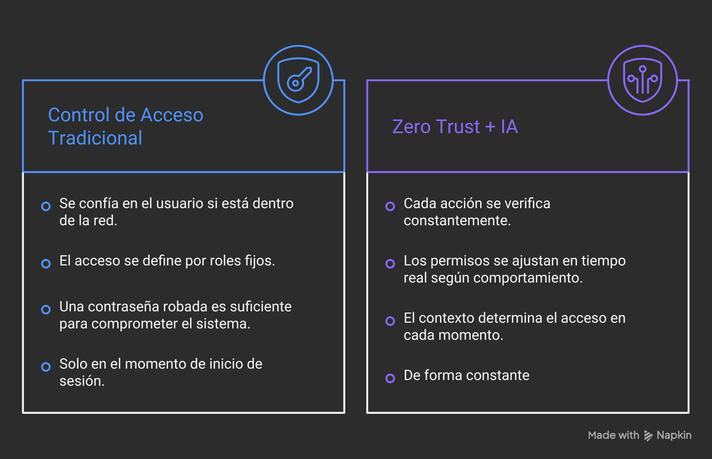
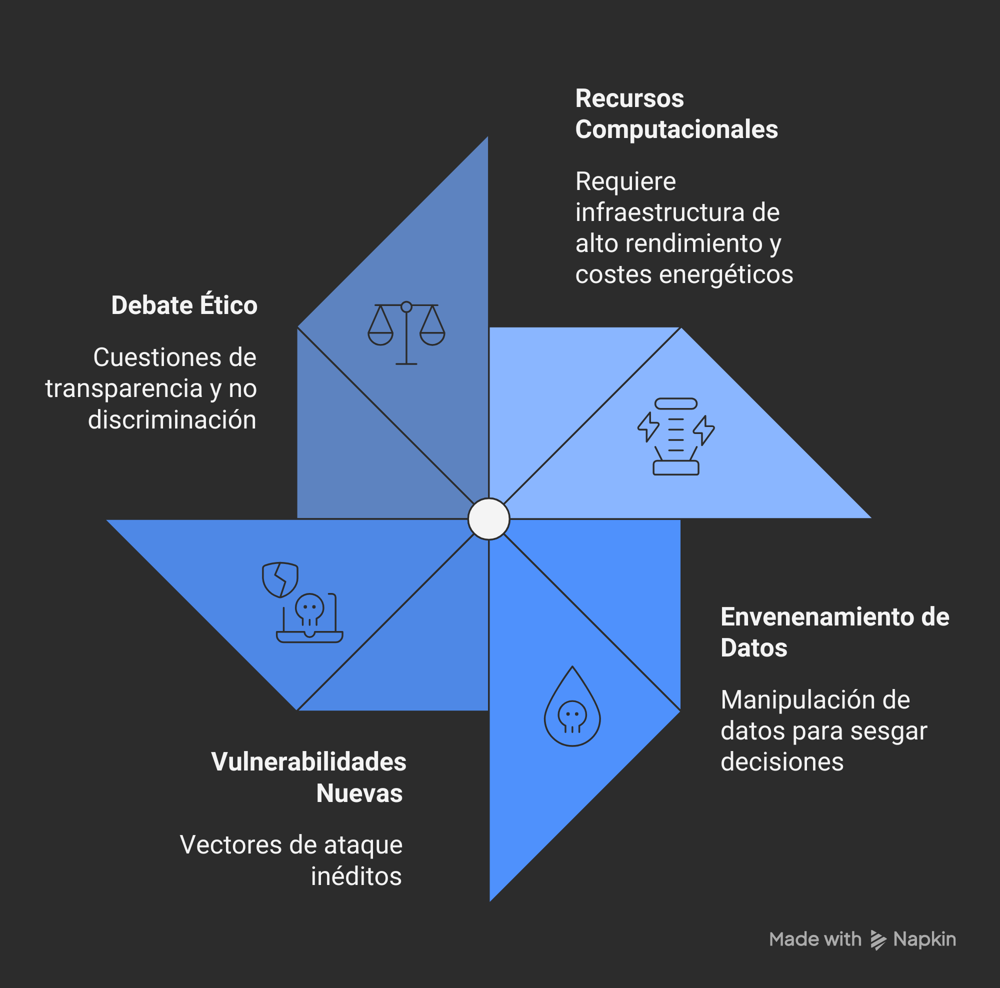

Cada vez que introduces una contraseña, el sistema hace una pregunta muy sencilla: ¿sabes el secreto? Si la respuesta es sí, entras. Si no, te quedas fuera. El problema es que el sistema nunca te pregunta a ti: le basta con que alguien conozca la clave correcta. Y como los delincuentes digitales llevan décadas perfeccionando el arte de robarlas, ese mecanismo está llegando al límite de lo que puede ofrecer. Lo que viene a continuación no es una contraseña más larga. Es algo bastante más curioso: un sistema que aprende a reconocerte.
Tu manera de teclear, una firma que no puedes falsificar
Piensa en los mensajes de voz que te manda una persona cercana. Sin ver el nombre, sabrías reconocerla: su vocabulario, el ritmo de sus frases, las expresiones que repite. Los modelos extensos de lenguaje, el tipo de inteligencia artificial que hay detrás de los asistentes más avanzados, son capaces de hacer exactamente lo mismo con cualquier usuario de un sistema informático.
Técnicamente, estos sistemas analizan en tiempo real el ritmo al que tecleas, los comandos que usas y el orden en que abres los documentos. Con ese perfil construyen una huella digital de comportamiento única. Si alguien que ha robado tu contraseña intenta hacerse pasar por ti, el sistema detectará la anomalía no porque conozca al intruso, sino porque sabe exactamente cómo eres tú.
No confíes en nadie: la arquitectura que vigila sin molestar
El concepto que agrupa todos estos avances se llama confianza cero en inglés, zero trust: ningún usuario ni dispositivo recibe acceso automático, aunque ya esté dentro de la red. Imagínalo como un banco donde los empleados tienen que identificarse cada vez que acceden a la cámara acorazada, aunque lleven años trabajando allí. No porque no se confíe en ellos, sino porque el riesgo lo justifica.

Y aquí es donde entra realmente la IA. Sin ella, verificar cada pequeño movimiento sería insufrible para el usuario. Con ella, el sistema distingue entre una anomalía legítima trabajas desde el aeropuerto porque estás de viaje y una potencialmente maliciosa, ajustando los permisos en tiempo real sin interrumpir tu trabajo.
Anticipar el ataque antes de que ocurra
La defensa reactiva tiene un problema evidente: cuando el sistema detecta que algo ha ido mal, el daño ya está hecho. La apuesta de la inteligencia artificial es diferente: en lugar de esperar al incendio, leer las señales de humo. Estos sistemas rastrean pequeñas anomalías en el tráfico de red que, aisladas, no significan nada, pero que juntas forman la silueta de un ataque inminente.
El sistema identifica patrones sospechosos antes de que el atacante actúe y activa defensas sin que el usuario note nada.
El sistema reacciona cuando el daño ya está en marcha. La respuesta llega demasiado tarde para evitar la fuga de datos.
Costes y riesgos: nada es gratis
El coste de uso de la IA es elevado: estos sistemas consumen una cantidad ingente de recursos computacionales e introducen nuevas vulnerabilidades. Un atacante sofisticado podría intentar "envenenar" los datos de entrenamiento del modelo para manipular sus decisiones, algo para lo que todavía no existe una solución definitiva.

Y hay una paradoja que no conviene ignorar: para que el sistema aprenda a reconocerte, tiene que observarte de forma constante. ¿Dónde termina la seguridad y dónde empieza la vigilancia? Es una pregunta que va más allá de la informática.
¿Cuánta vigilancia vale una buena seguridad?
La tecnología descrita en este artículo todavía está lejos de ser universal, pero la dirección es clara: el futuro de la seguridad digital no pasa por contraseñas más largas, sino por sistemas que aprendan a reconocer quién eres de verdad. Como profesional del sector, creo que los avances son prometedores, pero que las decisiones sobre cuántos datos de comportamiento cedemos a cambio de protección no pueden quedar solo en manos de los expertos técnicos.
La contraseña del futuro puede que no sea algo que recuerdes, sino algo que eres. La pregunta es cuánto estás dispuesto a que te observen para demostrarlo.